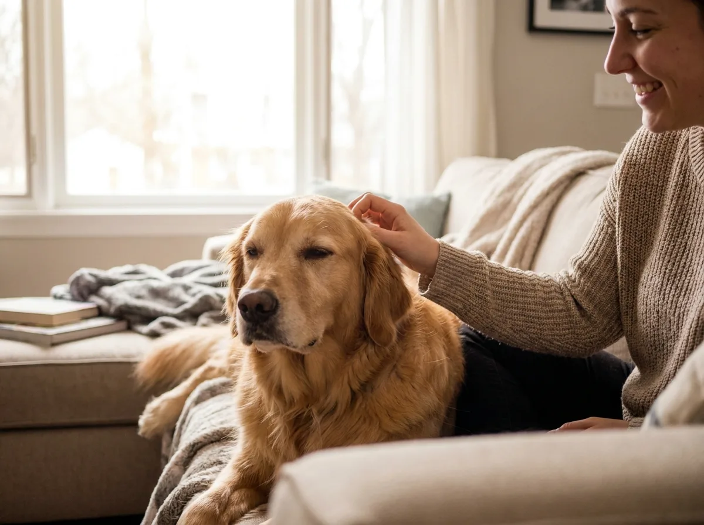
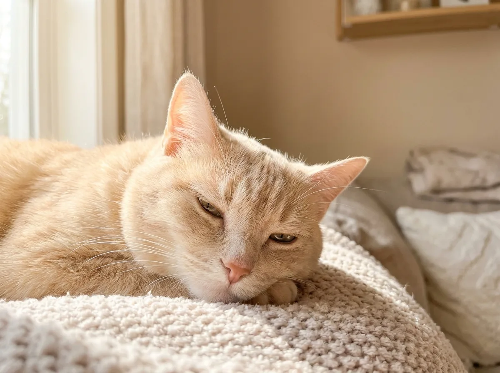

Our Story

The Beginning
「為什麼找不到一個讓我完全滿意的東西？」
2019年，設計師 Wei 養了第二隻貓，開始認真研究每一件她為貓咪買的東西。 漸漸地她發現：市面上大多數的寵物產品，不是材質有疑慮，就是設計讓人皺眉。 要好看的不夠好用，要好用的不夠安全。她的執念從這裡開始。

The Search
「如果沒有，那就自己找。」
Wei 開始在世界各地尋訪生產者：日本北海道的羊毛農場、 義大利托斯卡納的皮革工坊、台灣南部的有機農家。 她用飼主的眼光試用每一件東西，記錄毛孩的反應。 那些讓她眼睛一亮的，就成了尾巴選物的第一批商品。
What We Believe
01
安全第一
所有商品必須通過我們的安全審核：無毒材質、無有害添加物。 如果我們不敢讓自己的貓狗用，就不會放上架。
02
設計美感
好的設計是人與毛孩都喜歡的。 我們認為寵物用品不應該成為家裡的視覺噪音， 而是可以融入生活、讓家更溫暖的物件。
03
職人精神
我們偏好有故事的東西：那些由人用心做出來、 能夠被長久使用的物件。而不是一次性的快消品。
Milestones
2019
執念的開始
Wei 養了第二隻貓，開始對現有寵物產品感到不滿意，開啟了尋找之旅。
2021
묬一批選物
走訪日本、義大利、台灣，帶回第一批 12 件嚴選商品，在 Instagram 分享，意外引爆好評。
2022
正式開業
尾巴選物正式開設線上選物店，第一個月即售出 300 件商品，獲得媒體報導。
2024
500+ 精選商品
選物品項擴展至 500 件以上，服務遍及台灣全島，並開始拓展海外市場。